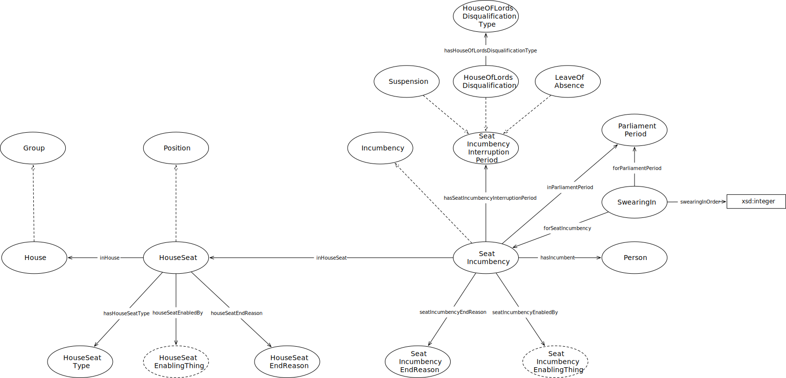

IRI: http://parliament.uk/ontologies/house-membership/House
IRI: http://parliament.uk/ontologies/house-membership/HouseOfLordsDisqualification
IRI: http://parliament.uk/ontologies/house-membership/HouseOfLordsDisqualificationType
IRI: http://parliament.uk/ontologies/house-membership/HouseSeat
IRI: http://parliament.uk/ontologies/house-membership/HouseSeatEnablingThing
IRI: http://parliament.uk/ontologies/house-membership/HouseSeatEndReason
IRI: http://parliament.uk/ontologies/house-membership/HouseSeatType
IRI: http://parliament.uk/ontologies/house-membership/LeaveOfAbsence
IRI: http://parliament.uk/ontologies/house-membership/ParliamentPeriod
IRI: http://parliament.uk/ontologies/house-membership/Person
IRI: http://parliament.uk/ontologies/house-membership/SeatIncumbency
IRI: http://parliament.uk/ontologies/house-membership/SeatIncumbencyEnablingThing
IRI: http://parliament.uk/ontologies/house-membership/SeatIncumbencyEndReason
IRI: http://parliament.uk/ontologies/house-membership/SeatIncumbencyInterruptionPeriod
IRI: http://parliament.uk/ontologies/house-membership/Suspension
IRI: http://parliament.uk/ontologies/house-membership/SwearingIn
IRI: http://parliament.uk/ontologies/house-membership/hasHouseOfLordsDisqualificationType
IRI: http://parliament.uk/ontologies/house-membership/hasHouseSeatType
IRI: http://parliament.uk/ontologies/house-membership/hasIncumbent
IRI: http://parliament.uk/ontologies/house-membership/hasSeatIncumbencyInterruption
IRI: http://parliament.uk/ontologies/house-membership/houseSeatEnabledBy
IRI: http://parliament.uk/ontologies/house-membership/houseSeatEndReason
IRI: http://parliament.uk/ontologies/house-membership/inHouse
IRI: http://parliament.uk/ontologies/house-membership/inHouseSeat
IRI: http://parliament.uk/ontologies/house-membership/inParliamentPeriod
IRI: http://parliament.uk/ontologies/house-membership/seatIncumbencyEnabledBy
IRI: http://parliament.uk/ontologies/house-membership/seatIncumbencyEndReason
IRI: http://parliament.uk/ontologies/house-membership/intendsToStandDown
IRI: http://parliament.uk/ontologies/house-membership/swearingInOrder
This HTML document was obtained by processing the OWL ontology source code through LODE, Live OWL Documentation Environment, developed by Silvio Peroni.